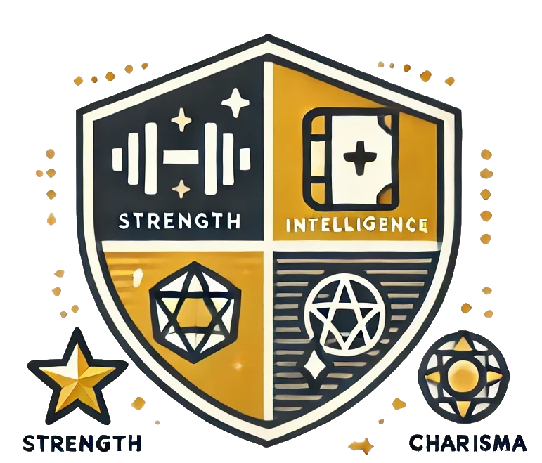
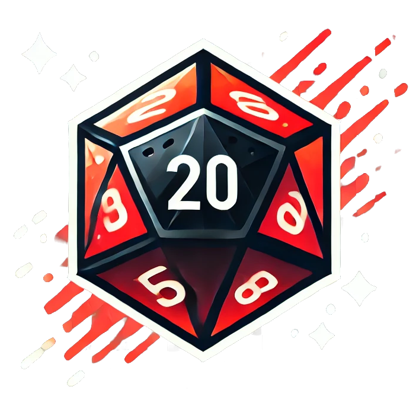
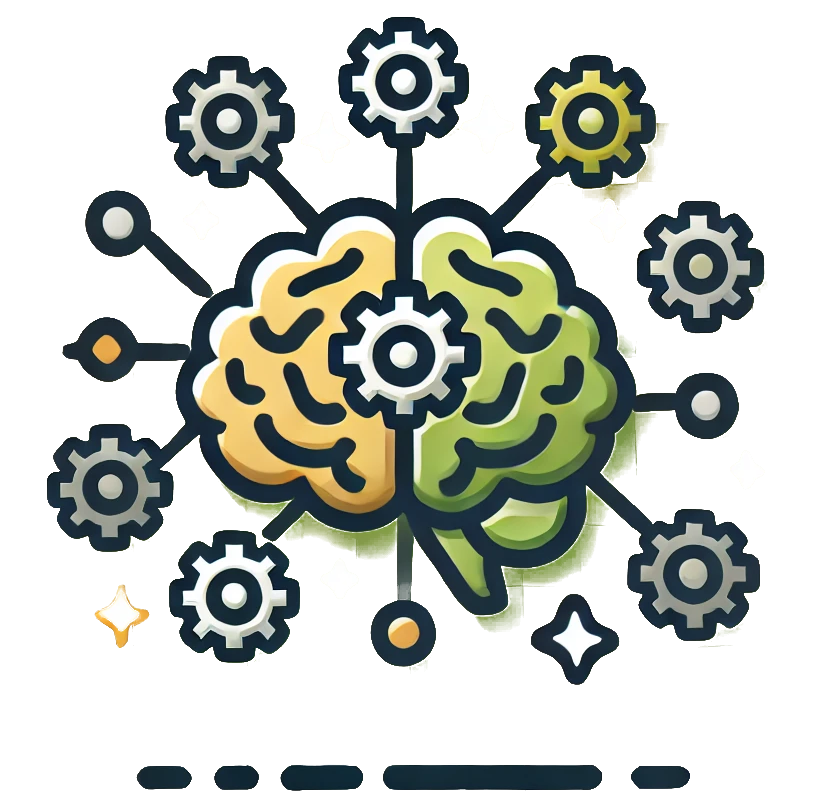
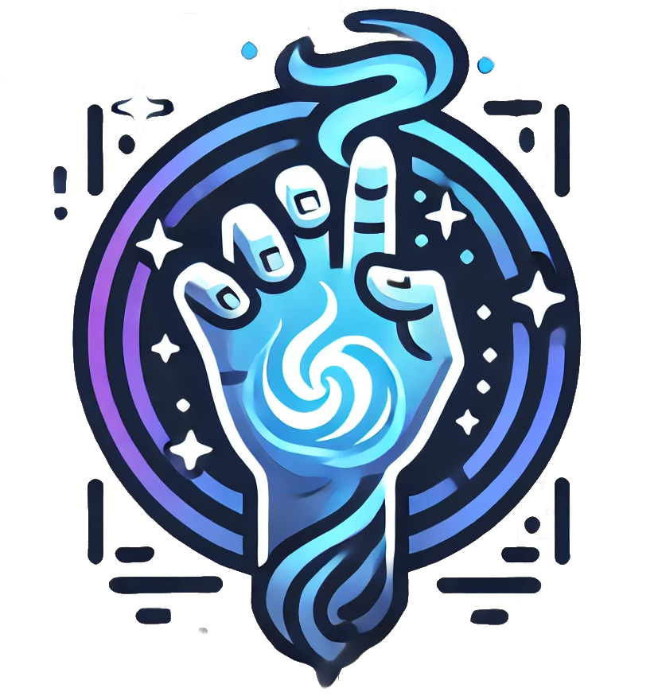

Trasfondo del Mundo
El mundo donde se desarrolla este sistema de juego parece familiar, pero está plagado de sutiles diferencias que lo hacen único. Aunque en la superficie es similar al mundo que conocemos, en su núcleo se perciben normas culturales, morales y religiosas que han tomado caminos divergentes.
En este entorno, los “Elegidos” son personas con habilidades sobrenaturales limitadas que desafían la comprensión común. La sociedad los percibe como una amenaza, asociándolos con conceptos arcaicos como la brujería o los milagros. Este prejuicio ha llevado a la persecución y marginación de los Elegidos, obligándolos a vivir en las sombras o bajo identidades falsas.
El conflicto principal se centra en la supervivencia de los Elegidos: ¿se adaptarán al papel de forasteros ocultos o se atreverán a luchar por cambiar las percepciones de la sociedad? Este dilema establece el tono del juego, ofreciendo infinitas oportunidades narrativas.
Historia del Mundo
La sociedad ha evolucionado de manera paralela a la nuestra, pero ciertos eventos históricos clave difieren. Por ejemplo:
- Religiones: Las religiones han adoptado posturas más absolutistas frente a lo sobrenatural, reforzando el rechazo a los Elegidos.
- Tecnología: Aunque la tecnología es similar a la actual, ciertos tabúes han limitado su avance en áreas específicas como la biotecnología.
En este contexto, los conceptos de justicia y honor están profundamente influenciados por un temor hacia lo desconocido. Las autoridades a menudo justifican la persecución de los Elegidos como un "acto de protección divina".
Los Elegidos
Los Elegidos no heredan sus poderes genéticamente ni a través de ritos mágicos. En su lugar, estos poderes parecen manifestarse al azar, como una “anomalía evolutiva”. Esto hace que incluso dentro de una misma familia, un Elegido pueda ser considerado un paria.
Sus poderes son vistos como peligrosos y antinaturales, lo que los coloca en constante peligro de persecución. Algunos deciden ocultar su identidad, mientras que otros buscan formas de usar sus dones para influir en la sociedad.
- Origen de los Poderes: Los poderes pueden surgir espontáneamente durante la adolescencia o como respuesta a un evento traumático.
- Sectores Culturales: En ciertas regiones más liberales, los Elegidos son tolerados siempre que mantengan sus habilidades bajo control.
Mecánicas Relacionadas con el Trasfondo
- Rol de los Elegidos: Cada jugador debe decidir cómo maneja su condición. ¿Se ocultan, usan sus poderes en secreto o los exhiben abiertamente?
- Eventos Narrativos Aleatorios: El Narrador puede incluir eventos como registros obligatorios, persecuciones religiosas o delaciones por parte de NPCs.
Sistema de Decisiones
Las decisiones de los jugadores tienen un impacto directo en el mundo. Por ejemplo:
- Ayudar a una aldea hostil puede mejorar la percepción pública, pero a costa de recursos o riesgos personales.
- Usar poderes públicamente puede resolver problemas inmediatos, pero aumentar la persecución a largo plazo.
 Mecánicas de los Atributos
Distribución Inicial
Al inicio del juego, cada jugador dispone de 40 puntos para repartir entre los seis atributos básicos: Fuerza (FUE), Agilidad (AGI), Resistencia (RES), Inteligencia (INT), Carisma (CAR) y Voluntad (VOL).
Las reglas de distribución inicial son las siguientes:
- Cada atributo debe tener al menos 1 punto.
- El valor máximo inicial permitido en un atributo es 10 puntos.
Ejemplo de Distribución Inicial:
| Atributo | Puntos Asignados |
|---|---|
| Fuerza (FUE) | 8 |
| Agilidad (AGI) | 6 |
| Resistencia (RES) | 10 |
| Inteligencia (INT) | 7 |
| Carisma (CAR) | 4 |
| Voluntad (VOL) | 5 |
Modificadores
El valor de cada atributo se utiliza como bono en las tiradas relacionadas con ese atributo. La fórmula básica es la siguiente:
Resultado de la tirada (1d20) + Bono del Atributo + Bonos adicionales (habilidades, equipo, etc.)
Ejemplo Práctico:
Situación: El jugador intenta abrir una puerta cerrada con fuerza bruta.
Atributo: Fuerza (FUE) = 8.
Dificultad Objetivo (DO): 15.
Tirada: El jugador lanza un 1d20 y obtiene un 10.
Cálculo final: 10 (tirada) + 8 (FUE) = 18. El personaje supera la DO y logra abrir la puerta.
Los modificadores influyen en todas las acciones del juego, tanto narrativas como de combate.
Evolución
Durante la campaña, los jugadores pueden invertir puntos de experiencia (PE) para mejorar sus atributos y adaptarse a los desafíos crecientes.
Reglas para Mejorar Atributos:
| Valor Actual del Atributo | Costo en PE para Incrementar +1 |
|---|---|
| 1–5 | 5 PE |
| 6–8 | 10 PE |
| 9–10 | 15 PE |
Restricciones:
- Un atributo no puede superar el valor de 15 puntos sin habilidades o efectos especiales.
- Solo se puede mejorar un atributo al final de una sesión o después de un evento significativo narrado por el Narrador.
Estrategias de Evolución:
- Fortalecer atributos clave: Incrementar los atributos principales para especializar aún más al personaje.
- Corregir debilidades: Usar PE para mejorar atributos bajos que han generado dificultades durante la campaña.
 Dados Usados
En este sistema de juego, los dados son fundamentales para resolver acciones, calcular daños y determinar resultados de eventos. Cada tipo de dado tiene un propósito específico y contribuye al dinamismo de la narrativa y el combate.
Tipos de Dados y Sus Usos
| Dado | Usos Principales | Ejemplo |
|---|---|---|
| 1d20 (principal) | Resolver la mayoría de las acciones importantes, como ataques, pruebas de habilidad o resistencias. | Intentar saltar un abismo con una prueba de Agilidad (AGI). |
| 1d4 | Calcular daño de ataques débiles o efectos de poderes menores. | Un golpe rápido con un arma ligera inflige 1d4 de daño. |
| 1d6 | Determinar daño de armas cuerpo a cuerpo estándar o efectos moderados. | Un golpe con un garrote hace 1d6 + FUE de daño. |
| 1d8 | Calcular daño de armas a distancia, como pistolas o arcos. | Una pistola inflige 1d8 de daño. |
| 1d10 | Usado para armas de gran impacto o efectos significativos. | Un rifle pesado inflige 1d10 + AGI de daño. |
Mecánicas de Dados
El sistema utiliza un enfoque basado en tiradas para determinar el éxito o fracaso de una acción. Aquí tienes los pasos principales:
-
Establecer la Dificultad Objetivo (DO): El Narrador define la dificultad basada en el contexto de la acción.
- Fácil: DO 5 (abrir una puerta sin cerradura).
- Moderada: DO 15 (esquivar un ataque básico).
- Difícil: DO 20 (cruzar un puente inestable bajo presión).
- Lanzar el dado correspondiente: Generalmente, se usa el 1d20 para las tiradas principales.
- Añadir los modificadores: Suma el atributo relacionado y otros bonos aplicables (habilidades, equipo, etc.).
- Comparar el resultado: Si el resultado final iguala o supera la DO, la acción tiene éxito.
Ejemplos Prácticos
-
Situación: El jugador intenta disparar a un enemigo con una pistola.
Tirada: 1d20 para determinar si el disparo impacta.
Fórmula de daño: Si el disparo impacta, se lanza 1d8 para calcular el daño infligido. -
Situación: El jugador usa telequinesis para mover un objeto pesado.
Tirada: 1d20 para comprobar si logra moverlo.
Resultado: El éxito depende de la DO establecida por el Narrador y del atributo Voluntad (VOL) del jugador. -
Situación: Un enemigo ataca con un garrote.
Tirada: 1d20 para determinar si el ataque impacta.
Fórmula de daño: Si el ataque impacta, el Narrador lanza 1d6 + FUE del enemigo para calcular el daño.
 Habilidades
Los jugadores seleccionan 3 habilidades destacadas, que reciben un bono inicial de +2. Cada habilidad está asociada a un atributo:
- FUE: Atletismo, Trepar, Nadar.
- AGI: Sigilo, Esquivar, Acrobacias.
- RES: Supervivencia, Resistencia Física, Tolerancia.
- INT: Investigación, Tecnología, Conocimiento.
- CAR: Persuasión, Intimidación, Engaño.
- VOL: Resistencia Mental, Concentración, Meditación.
 Poderes
| Poder | Descripción | Ejemplo de Uso |
|---|---|---|
| Telequinesis | Mueve objetos pequeños (máx. 5 kg). | Desplazar un arma fuera del alcance del enemigo (DO 15). |
| Clarividencia | Ver imágenes de eventos cercanos (1 minuto de duración). | Predecir una emboscada (DO 20). |
| Regeneración | Sanar heridas menores (1d6 puntos). | Curarse tras un combate. |
Resolución de Acciones
| Dificultad | Descripción | DO |
|---|---|---|
| Fácil | Tareas simples sin riesgo. | 5 |
| Moderada | Requiere habilidad y concentración. | 15 |
| Difícil | Un verdadero desafío. | 20 |